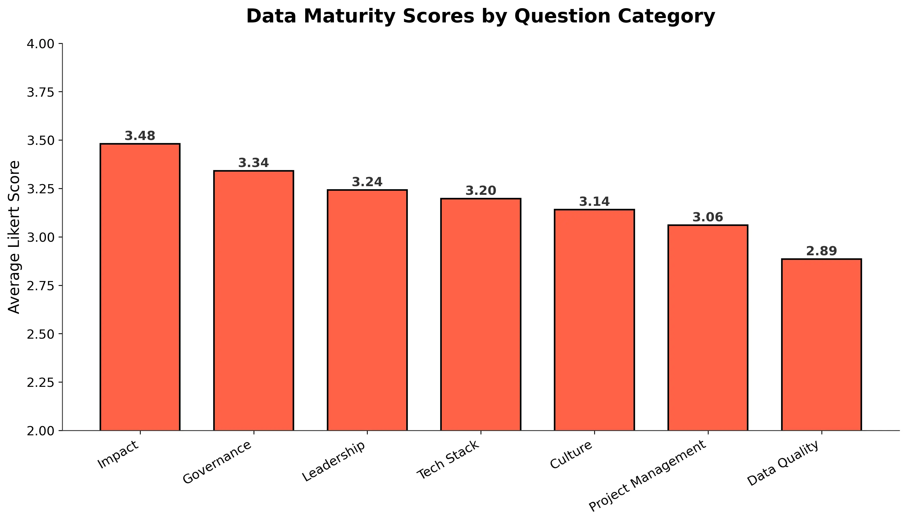
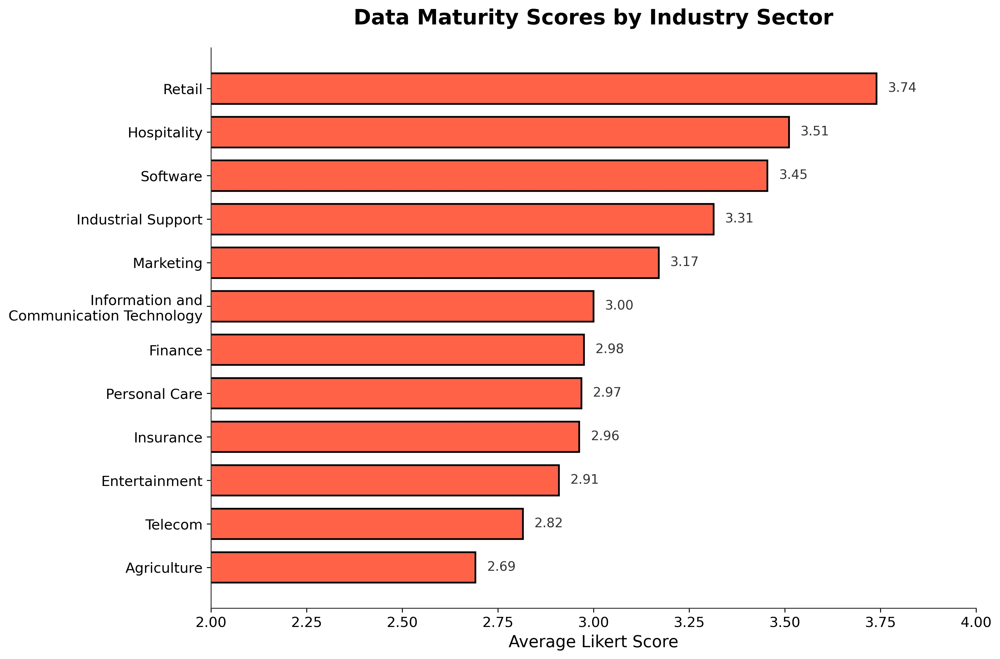
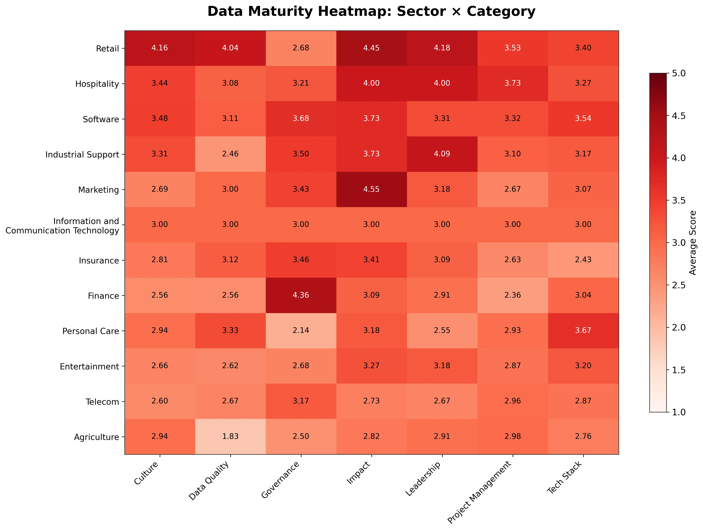

Roni Kobrosly Ph.D.'s Website
written by Roni Kobrosly on 2026-01-04 | tags: generative ai engineering career data
It's been about a year since I launched Data Compass AI, and we've now collected over 3,000 survey responses from organizations spanning finance, software, retail, telecom, and more. I'm planning on throwing the power switch and wind down this experiment. I wanted to give it a proper goodbye take a moment to share what the data tells us. It also gave me a chance to try out some agentic-generated (and human-verified) analytics.
First, thank you everyone who took a few minutes to fill out the survey. It means so much to me. The data will not be shared and your anonymity will be preserved forever.
Feel free to read more about datacompass.ai in one of my earlier blog posts, but the one-minute summary is on the now deceased Data Compass About page is:
The data science/ML engineering/AI engineering field is exploding.
It's been called the sexiest job of the 21st century.
Many data science and AI masters programs are springing up,
creating armies of data scientists and AI engineers.
And yet, many data scientists seem to be leaving the field in droves.
Job satisfaction is low, and burnout is high. There are many reasons for this.
* When interviewing for potential data science roles, candidates are told the
company has "mountains of data" and "endless exciting problems to tackle".
This is often not true.
* Company culture is not data-driven, causing data scientists to struggle to get
buy-in for their work.
* Data scientists are often siloed in their work,
and don't get to work on the most interesting problems.
* Data quality and data documentation is awful.
Data Compass's mission is to make organizations' data maturity levels
(be they large corporations, startups, non-profits, or government agencies)
transparent to data job seekers and the data community. And also to allow
organizations to see how their data maturity stacks up against others in their industry.
To come up with a set of survey questions, I spoke with a number of brilliant data leaders and ICs. I tried to carefully synthesize their feedback with what I had seen across companies of many sizes. These are the likert questions that emerged. I know it isn't possible to check off each question in company interviews, but I'm still proud of this list and think it is a truly fantastic question pool to draw from if you're interviewing for a data, tech role in 2026.
👨💻 Tech Stack
How robust, scalable, and modern is your organization’s data and ML infrastructure?
- Our organization employs the standard open-source data stack (e.g., R, Python, Spark, DuckDB, dbt).
- It is not difficult to put dashboards into production.
- It is not difficult to put machine learning models into production.
- We employ CI/CD practices for deployment of data pipelines and models with automated checks.
- We have clear guidelines around writing software tests (unit, integration, etc.).
- The company’s data stack supports scalable ETL processes.
- The data team has access to modern, cloud-based tools and platforms.
- The technical stack supports streamed or near real-time data processing.
- The company has a robust system for version control (e.g., Git) across analytics, ETL, training, and model serving code.
- The infrastructure enables experimentation and rapid deployment of ML models.
- Data scientists can self-serve compute resources (e.g., cloud credits, GPU access).
- The team uses orchestration tools (e.g., Airflow, Prefect) for workflow automation.
- MLOps practices (e.g., model monitoring and retraining) are fully implemented.
- The company invests in keeping the data technology stack up to date.
- Infrastructure scales efficiently to handle spikes in data volume.
🏥 Data Quality
How trustworthy, discoverable, and well-managed is your data?
- The data is of high enough quality that insights and models can be derived quickly.
- Our data is accurate — it is close to its true values.
- Our data is complete — we have all of the data we need.
- Our data is consistent across systems and databases.
- We track and report on KPIs related to data quality.
- It is easy to identify an individual or team accountable for each data asset.
- Metadata and data dictionaries are easily accessible.
- There is a defined process for addressing and resolving data quality issues.
- Data validation checks are implemented throughout the data pipeline.
- Data duplication and inconsistencies are proactively identified and resolved.
- Historical data is preserved to support long-term analysis.
- Data lineage (origins and transformations) is clearly documented.
📈 Impact
How much measurable value does data create for the business?
- Analytics and ML are used throughout the company, not just in isolated teams.
- The business would be severely impacted if the data teams disappeared.
- Data-driven decisions have resolved high-stakes business disagreements.
- The data team contributes to competitive differentiation.
- Employees outside the data team advocate for its importance.
- The data team demonstrates measurable ROI (e.g., revenue lift, cost reduction).
- Other teams’ KPIs are directly tied to data team deliverables.
- The team’s work has reduced manual effort through automation.
- Dashboards and ML models are used to a significant degree.
- Data projects are scaled and maintained long-term.
- Data products have uncovered new business opportunities.
🫂 Culture
How well does the organization support data-driven ways of working?
- The data maturity described during interviews matched my lived experience.
- Experimentation is encouraged, even when faster but sub-optimal solutions exist.
- Data is used to challenge assumptions and existing practices.
- Stakeholders actively want to engage with the data team.
- Data teams are consulted early in product and business strategy discussions.
- Collaboration between data teams and other departments is seamless.
- Teams are not competing against each other for the same objectives.
- Shadow data teams rarely undermine centralized data efforts.
- Data literacy is high among non-data team members.
- The data team feels like first-class citizens within the organization.
- Tangible progress in data maturity makes me optimistic about the future.
- The culture prioritizes data-driven automation over manual processes.
- The data team spends little time correcting unrealistic ML expectations.
- The organization takes a balanced, informed approach to new technologies.
- Data professionals are treated as strategic partners.
- Communities of practice (e.g., journal clubs, guilds) exist for data topics.
🔝 Leadership
How effectively does leadership support and champion data initiatives?
- Senior leadership understands the data team’s pain points.
- Leadership has made good-faith efforts to alleviate these pain points.
- Leaders understand how machine learning works and when it should be used.
- Leadership has a clear vision for aligning data with business strategy.
- Leaders actively communicate the importance of data-driven decision-making.
- Leadership provides sufficient resources (budget, tools, headcount).
- Data strategy is regularly reviewed and approved by leadership.
- Leaders encourage cross-functional collaboration.
- Leadership prioritizes hiring and retaining skilled data professionals.
- Data projects have clear executive sponsorship.
- Executives publicly advocate for the value of data.
📚 Governance
How well is data managed, protected, and used responsibly?
- Clear accountability exists for data governance and privacy.
- Employees understand their compliance responsibilities.
- Staff receive appropriate training on data protection laws.
- Automated processes ensure compliance with privacy regulations.
- Personal and sensitive data is automatically identified.
- Appropriate technology is in place to secure data.
- Permissions and access rights are systematically managed.
- Data is classified by sensitivity level.
- The organization complies with relevant data protection regulations.
- Data breaches are logged, reviewed, and acted upon.
- Data retention policies are clearly defined and followed.
- Third-party vendors are vetted for data policy compliance.
- Data anonymization techniques are used when appropriate.
- Governance policies extend to AI and ML systems.
⏲️ Project Management
How effectively are data initiatives planned, delivered, and sustained?
- There is a formal process for engaging stakeholders.
- A backlog exists for managing data ideas and requests.
- New data product ideas follow a documented intake and grooming process.
- Projects are prioritized using a standardized framework.
- Stakeholders align on MVP requirements.
- User stories and acceptance criteria are clearly defined.
- Post-launch monitoring ensures performance expectations are met.
- Technical debt is documented and prioritized.
- Teams regularly conduct retrospectives.
- The data team maintains a healthy backlog of work.
- End-user feedback is incorporated into iterations.
- Roles and responsibilities are clearly defined.
- Ad-hoc requests are balanced with long-term strategic work.
- Roadmaps are visible and kept up to date.
- Timelines are realistic and well-communicated.
Findings
Let me begin by saying: Yes, I know that there is likely selection bias at play here in terms job satifaction and likely to fill out the survey. I also know that large organizations can have multiple data teams, and their experience can vary wildly. There are a bunch more cavaets I can insert here, but I still think it's worth seeing if there is a data story here.
As for the results... the short version? The overall average score across all dimensions is 3.19 out of 5. That's just barely above neutral. Not catastrophic, but not exactly a ringing endorsement of how organizations are treating their data functions either.
Let's dig into the details of the question categories.

Categories Where Organizations Are Doing Well (Relatively Speaking)
The highest-scoring dimension is Impact at 3.48. This suggests that when data teams do get their work into production, it tends to matter. People outside the data team recognize the value. In fact, one of our highest-scoring individual questions (3.88) was "Employees outside the data team advocate for its importance." That's encouraging—it means the work isn't going unnoticed.
Governance comes in second at 3.34. Organizations seem to be taking compliance seriously (likely because they have to). The question about complying with data protection regulations like HIPAA and GDPR scored 3.81.
The other piece of good news: organizations are generally adopting modern tools. The highest-scoring question overall (3.97) was about employing the standard open-source data stack (R, Python, Spark, DuckDB, dbt, etc.), and access to cloud-based tools scored 3.91.
Categories Where Organizations Are Struggling
Here's where it gets painful.
Data Quality is the lowest-scoring dimension at 2.89—below neutral. If you've ever tried to build a model or dashboard on messy, undocumented data, this won't surprise you. The question about having "easily accessible metadata and dictionaries" scored a dismal 2.50. Organizations are collecting mountains of data but apparently not documenting what any of it means.
Project Management scored 3.06, which doesn't sound terrible until you look at the individual questions. "Technical debt in data projects is documented and prioritized" scored the lowest of all 94 questions at 2.41. And "Data projects are prioritized using a standardized framework" came in at 2.44. In other words, many data teams are flying blind without clear prioritization frameworks, accumulating technical debt that nobody is tracking.
And then there's the elephant in the room: putting ML models into production. Despite all the hype about AI and machine learning, the question "It is not difficult to put machine learning models into production" scored just 2.53. Compare that to putting dashboards into production (3.84). The gap tells the story—organizations have figured out BI, but MLOps remains a struggle.

How Do Sectors Compare?
This is where it gets interesting.
Retail leads the pack at 3.74, followed by Hospitality at 3.51 and Software at 3.45. I'll admit I was a bit surprised by retail topping the list, but it makes sense when you consider how data-driven inventory management, pricing, and customer analytics have become in that space.
At the bottom? Agriculture at 2.69, Telecom at 2.82, and Entertainment at 2.91. Finance—despite all its resources—came in at a middling 2.98. Admittedly, there is a lot regulation and red tape that goes into that work, so perhaps that is understandable.
The spread between top and bottom sectors is over a full point on a 5-point scale. That's significant. If you're a data professional considering a job change, industry matters.
In case you want to look at the crosstabs of sector and question category, here you go:

Some of the highest-scoring boxes make a lot of sense to me. I would expect marketing to have high data impact, that is the sector where arguably where the most data innovation has occurred over the last two decades (think Google, Meta, ad buys, etc.). Also, of course finance has the highest governance rating.
Highest-scoring questions
- Our organization employs the standard open-source data stack
- The data team has access to modern, cloud-based tools and platforms
- Employees outside the data team advocate for its importance
- If the data analytics, data science, and machine learning engineering teams were to disappear, the business would be severely impacted
- The organization complies with relevant data protection regulations (e.g., HIPAA, GDPR, CCPA)
Lowest-scoring questions
- Our data is complete — we have all of the data we need
- We have clear guidelines to follow around writing software tests (unit, integration, etc.)
- It is easy to identify an individual or team that is accountable for each data asset
- It is not difficult to put machine learning models into production
- Data projects are prioritized using a standardized framework (e.g., RICE, MoSCoW)
- The infrastructure enables experimentation and rapid deployment of ML models
What Does This Mean For You?
If you're a job seeker
Use these results and some of the survey questions to guide your questions put towards employees. Ask pointed questions in interviews about data quality, documentation, ML deployment processes, etc. These areas were underdeveloped a decade ago and apparently remain so. These are the areas where organizations are most likely to be overselling themselves.
If you're a data org leader
The message is clear. The tools are there. The talent is there. The gaps are in the fundamentals—data quality, documentation, prioritization frameworks, and MLOps infrastructure. These aren't sexy problems, but they're the ones holding teams back.